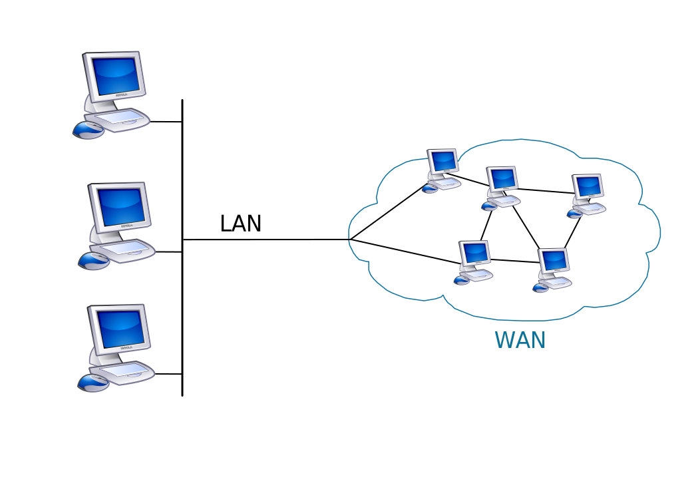
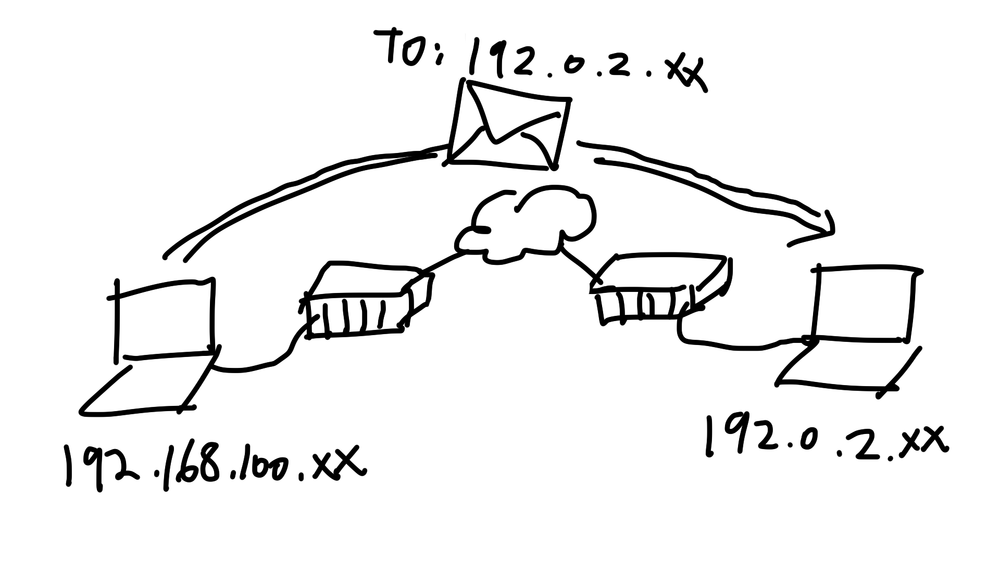
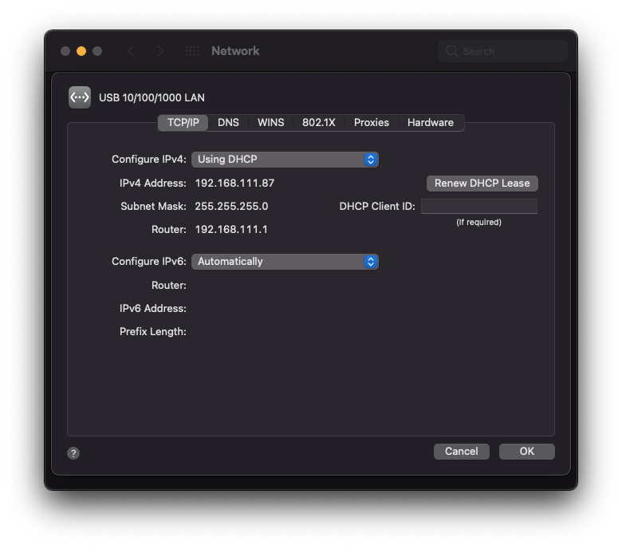
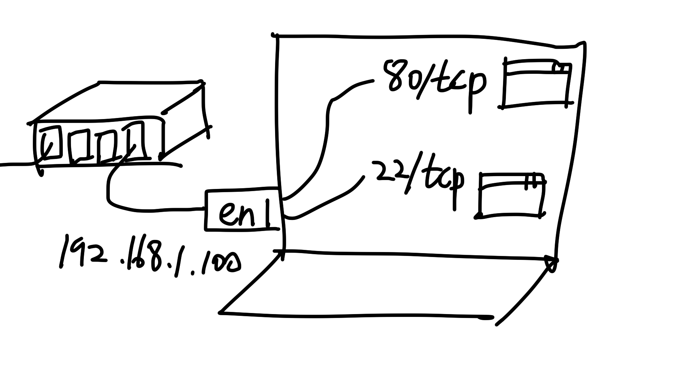
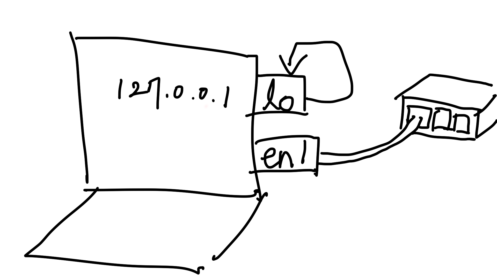

Minimum Computer Networking for Web Developers
tags: [networking]
Computers are much more useful when they can communicate with one another. That’s why there are suites of communication protocols. The Internet protocol suite, also known as TCP/IP, is the one that’s most relevant to web developers.
Terms
- Computer network
- A set of computers that communicate with each other.
- Network node
- A computer that participates in a computer network.
- Network interface
- The point where a computer connects to a network. Usually they are wired/wireless LAN cards attached to a computer.
- Local area network (LAN)
- A computer network that is bounded by location. Ex. home network or office networks. Bigger networks such as wide area networks (WANs) and the Internet are made up by interconnected LANs.
 Gateway_firewall.svg: Harald Mühlböck, derivative work: Ggia, CC BY-SA 3.0 http://creativecommons.org/licenses/by-sa/3.0/, via Wikimedia Commons
- Packet
- A unit of data transmitted across network is called packet. A packet comprises of a control header and a payload.
In computer networking, encapsulation means that the packet of a high-level protocol is handled as an opaque data on the lower level protocol, and wrapped around with a control header to form a lower-level packet, and so on.
 en:User:Cburnett original work, colorization by en:User:Kbrose, CC BY-SA 3.0 http://creativecommons.org/licenses/by-sa/3.0/, via Wikimedia Commons
en:User:Cburnett original work, colorization by en:User:Kbrose, CC BY-SA 3.0 http://creativecommons.org/licenses/by-sa/3.0/, via Wikimedia Commons
The OSI Model
The OSI model is a reference model that dividies the functions of networking systems into 7 layers. The layers of the OSI model do not exactly map to the actual protocols of TCP/IP, but it is widely when describing network protocols.
- Physical
- Data Link
- Network (commonly referred as Layer 3 or L3)
- Transport (L4)
- Session
- Presentation
- Application (L7)

en:User:Kbrose, CC BY-SA 3.0 http://creativecommons.org/licenses/by-sa/3.0/, via Wikimedia Commons
Physical layer (L1)
Twisted pair cables and optical cables, and radio waves for the case of Wi-Fi belong in this layer. The physical layer is closely related to the data link layer.
Data link layer (L2)
The data link layer transfers data between nodes across the phyical layer. The packets of the data link layer are called frames or data frames.
- Ethernet
- Ethernet is the a widely used data link layer protocol. It is commonly used to create LANs.
ifconfig command can be used to show the hardware addresses (MAC address) of network interfaces. (ether 41:ca:c7:d4:46:ec here)
$ ifconfig en7
en7: flags=8863<UP,BROADCAST,SMART,RUNNING,SIMPLEX,MULTICAST> mtu 1500
options=6467<RXCSUM,TXCSUM,VLAN_MTU,TSO4,TSO6,CHANNEL_IO,PARTIAL_CSUM,ZEROINVERT_CSUM>
ether 41:ca:c7:d4:46:ec
inet6 fe80::bb:54ae:1c0d:a7a2%en7 prefixlen 64 secured scopeid 0xc
inet 192.168.111.2 netmask 0xffffff00 broadcast 192.168.111.255
nd6 options=201<PERFORMNUD,DAD>
media: autoselect (1000baseT <full-duplex>)
status: active
On Linux, ip link command also can be used.
$ ip link show enp0s31f6
2: enp0s31f6: <BROADCAST,MULTICAST,UP,LOWER_UP> mtu 1500 qdisc fq_codel state UP mode DEFAULT group default qlen 1000
link/ether 41:ca:c7:d4:46:ec brd ff:ff:ff:ff:ff:ff
Network layer (L3)
The Internet Protocol (IP) of the TCP/IP model belongs in this layer. The network layer is responsible for transfering packets between nodes in different networks, using the IP addresses in the case of TCP/IP. (internetworking)

- IP address
- A label used to locate a network interface, analoguous to a physical address of a house. ex. ‘192.0.2.1’
- Subnet
- A logical subdivision of an IP address space, specified by an address prefix. For an example, the subnet 192.0.2.0/24 contains the addresses from 192.0.2.0 to 192.0.2.255. In TCP/IP, usually one subnet is assigned to one network.
You can check which subnet an interface is assigned with using ifconfig or ip addr commands (subnet 172.17.0.0/16 here):
# ip addr show eth0
39: eth0@if40: <BROADCAST,MULTICAST,UP,LOWER_UP> mtu 1500 qdisc noqueue state UP group default
link/ether 02:42:ac:11:00:02 brd ff:ff:ff:ff:ff:ff link-netnsid 0
inet 172.17.0.2/16 brd 172.17.255.255 scope global eth0
valid_lft forever preferred_lft forever
- Gateway
- A network node that transfers packets from one network to another network. This job is usually done by dedicated devices called routers. In a home environment, the home router works as an Internet gateway.
- Routing table
- A list of rules that a system consults to determine where to send the given packet next. Routing table is important for systems that are connected to multiple networks.
- Default gateway
- In a routing table, an entry to the default gateway is usually present. It is used when no other routing rule matches the given packet. In a home environment, the default gateway is usually the router that connects to the Internet.
You can view a system’s routing table with netstat -r or ip route commands. Here, you can see that the default gateway is set to 192.168.111.1.
$ netstat -r -f inet
Routing tables
Internet:
Destination Gateway Flags Netif Expire
default 192.168.111.1 UGScg en7
default 192.168.111.1 UGScIg en0
127 localhost UCS lo0
localhost localhost UH lo0
169.254 link#12 UCS en7 !
169.254 link#10 UCSI en0 !
...
The same infomation can be seen in the Network settings window on Mac.

You can check if a host is reachable with the ping command.
$ ping 8.8.8.8
PING 8.8.8.8 (8.8.8.8): 56 data bytes
64 bytes from 8.8.8.8: icmp_seq=0 ttl=111 time=35.812 ms
You can check which nodes a packet goes through along the route to destination with traceroute command.
$ traceroute -n 8.8.8.8
traceroute to 8.8.8.8 (8.8.8.8), 30 hops max, 60 byte packets
1 192.168.1.1 0.907 ms 0.823 ms 0.785 ms
2 * * *
3 27.1.253.41 1.164 ms 1.165 ms 1.192 ms
4 172.22.28.165 1.605 ms 1.724 ms 172.22.28.161 1.563 ms
5 172.20.4.13 13.586 ms 13.567 ms 13.526 ms
6 192.145.251.137 2.136 ms 1.948 ms 3.305 ms
7 4.69.218.122 31.788 ms 33.830 ms 33.725 ms
8 72.14.202.202 33.881 ms 33.467 ms 33.457 ms
9 * * *
10 8.8.8.8 33.072 ms 31.852 ms 31.452 ms
Address resolution protocol (ARP)
ARP is a protocol positioned between the data link layer and the IP layer. It is used to map IP addresses to physical addresses (MAC) in order to transfer packets within a network.
arp -n command to show the mappings cached by the computer.
$ arp -n
Address HWtype HWaddress Flags Mask Iface
169.254.169.254 (incomplete) enp0s31f6
192.168.111.252 ether 9d:e9:38:b4:72:73 C enp0s31f6
192.168.111.87 ether c9:0c:c7:bd:1d:a7 C enp0s31f6
192.168.111.241 ether d8:9e:42:db:2d:e9 C enp0s31f6
172.17.0.3 (incomplete) docker0
192.168.111.125 ether c6:cd:f8:25:02:28 C enp0s31f6
...
Dynamic Host Configuration Protocol (DHCP)
In order for a computer to participate in a TCP/IP network, it needs to know the subnet and gateway of the network and also has to be assigned an appropriate IP address. (And it also needs other settings like domain name and name servers.) DHCP is a protocol that lets those settings configured automatically when computer connects to the network. It is a client-server architecture and DHCP server is set up by network admins.
dhclient command can be used to manually invoke the DHCP client.
% sudo dhclient cpsw0
DHCPREQUEST on cpsw0 to 255.255.255.255 port 67
DHCPACK from 192.168.200.254
bound to 192.168.200.103 -- renewal in 1800 seconds.
Check the logs from the DHCP client:
$ journalctl | grep -i dhcp
Jan 28 12:21:55 raspberrypi systemd[1]: Starting DHCP Client Daemon...
Jan 28 12:21:56 raspberrypi dhcpcd[492]: dev: loaded udev
Jan 28 12:21:56 raspberrypi dhcpcd[492]: forked to background, child pid 538
...
Transport layer (L4)
The transport layer allows end-to-end communications between programs running in different hosts. The TCP (Transmission Control Protocol) is one of the main transport layer protocols of TCP/IP. Many internet application protocols, such as web, email, telnet, and SSH, are based on TCP.

Transmission Control Protocol (TCP)
TCP is connection-oriented. Different ends of TCP connections within a host are distinguished by 16-bit port numbers.
The netcat utility can be used to test TCP connections.
# Listen on port number 1234 on the loopback device.
$ nc -l 127.0.0.1 1234
# From another terminal, connect to port number 1234 and send data.
$ nc 127.0.0.1 1234
hello
Test an HTTP server with netcat:
$ nc -C api.ipify.org 80
GET / HTTP/1.1
Host: api.ipify.org
HTTP/1.1 200 OK
Server: Cowboy
Connection: keep-alive
Content-Type: text/plain
Vary: Origin
Date: Thu, 07 Jul 2022 16:44:34 GMT
Content-Length: 12
Via: 1.1 vegur
103.102.166.224
Transport Layer Security (TLS) and Public Key Infrastructures (PKIs)
A subject for a whole other article.
Application layer (L7)
The highest layer in the OSI model, the protocols of the appliation layer are those of user-facing applications. The most prominent one is HTTP.
Hypertext Transfer Protocol (HTTP)
HTTP is for requesting and transfering web documents and other data between clients (usually web browsers) and servers. If you are a web developer, it is worthwhile to know its basics. https://developer.mozilla.org/en-US/docs/Web/HTTP is a good source to learn HTTP and other web technologies.
’localhost’ and loopback interfaces

TCP/IP is for communications between different computers, but often times a program needs to connect to another program running on the same host. The loopback network interface is a network interface that exists only virtually in a system and is used for programs to connect to services on the same host. It can be referred as 127.0.0.1 or ’localhost'.
It has name ’lo’ or ’lo0’ when looked up by ifconfig:
# ifconfig lo
lo Link encap:Local Loopback
inet addr:127.0.0.1 Mask:255.0.0.0
UP LOOPBACK RUNNING MTU:65536 Metric:1
RX packets:0 errors:0 dropped:0 overruns:0 frame:0
TX packets:0 errors:0 dropped:0 overruns:0 carrier:0
collisions:0 txqueuelen:1000
RX bytes:0 (0.0 B) TX bytes:0 (0.0 B)
Domain Name System (DNS)
In order to connect to a host using TCP/IP, you need its IP address. But IP addresses are not easy for humans to remember. That is why we have Domain Name System (DNS). The DNS system provides mapping from human-friendly domain names to IP addresses, analoguous to a phone book.
Because it is impractical to browse the web without working DNS, when DHCP configures the network settings of a computer it also configures the DNS servers.
On Linux, you can view the system DNS servers from /etc/resolv.conf file:
$ cat /etc/resolv.conf
...
nameserver 8.8.8.8
...
You can use dig or drill command to directly query DNS servers:
$ dig +short google.com
142.250.206.238
# Specify the DNS server to query instead of using the system DNS servers:
$ dig +short google.com @8.8.8.8
142.250.207.110
End.